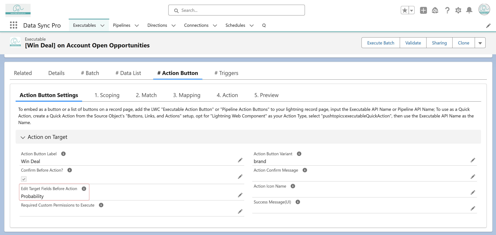

<section>
    <p>
      Yes, specify the target fields that should be editable before execution
      by listing them as comma-separated values in the
      <strong>"Edit Target Fields Before Action"</strong> field under the
      <strong>"Action on Target"</strong> section.
    </p>
  </section>
  
  